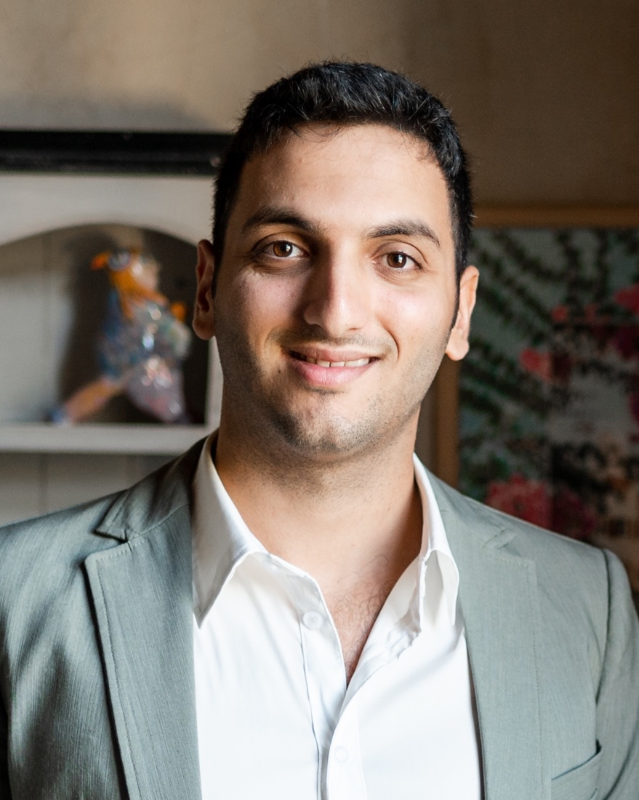

Sensors · 2024 · First author
Extended-field-range PHE sensors
Extended the usable field range of elliptical planar Hall effect sensors for increased industrial applicability — published in Sensors and selected as an Editors’ Choice article.
PhD Student · Experimental Condensed Matter & Spintronics
I study planar Hall effect magnetic sensors, magnetic anisotropy in patterned ferromagnetic thin films, and spintronic devices on flexible substrates — at Bar-Ilan University, in the group of Prof. Lior Klein.

Academic profile
Daniel Lahav is a PhD student in the Department of Physics and the Institute of Nanotechnology and Advanced Materials (BINA) at Bar-Ilan University, working in the group of Prof. Lior Klein. His thesis, Flexible Spintronics Under Strain, examines how mechanical strain reshapes magnetic anisotropy, anisotropic magnetoresistance, and spin–orbit effects in thin-film devices fabricated on flexible substrates.
Alongside his research he operates the sputtering, lithography, and dicing systems at Bar-Ilan’s nano-fabrication center, where he fabricates the devices he studies — and he builds much of his own tooling, from low-noise measurement electronics to micromagnetic-simulation and magneto-optical imaging software.
Research
Sensors · 2024 · First author
Extended the usable field range of elliptical planar Hall effect sensors for increased industrial applicability — published in Sensors and selected as an Editors’ Choice article.
PhD thesis
Spintronic heterostructures on flexible substrates, using strain as a knob: how bending and stretching modify magnetic anisotropy, magnetoresistance, and spin–orbit torques, toward multifunctional sensors that measure magnetic field and strain at once.
APL · 2023
Co-authored an Applied Physics Letters study demonstrating a flexible planar Hall effect sensor with sub-200 picotesla resolution, covered by EurekAlert, The Jerusalem Post, and AZO Sensors.
Publications
Additional manuscripts are currently under review and in preparation.
Experience
Education & recognition
Conferences & service
I’m glad to talk about research, collaborations, and measurement.